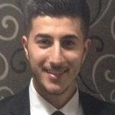

PRESENTATION
|  | Murat MENDIL 23ans / Permis B 24 rue henri mondors 93110 Rosny-sous-bois mendil.murat@yahoo.com |
FORMATIONS ET DIPLÔMES
En cours BAC +4 Architecte Logiciel – Nextadvance école supérieure du groupe NEXT, PARIS (75)
Juin 2017 Master Mathématique et Informatique Appliquée au Science Humaine et Sociale - Université Paris 8, SAINT-DENIS
Septembre 2016 Licence professionnelle Technologie de la Mobilité et de l'accessibilité - IUT de Vélizy, VELIZY-VILLACOUBLAY
Juillet 2015 BTS Domotique et Gestion Technique du Bâtiment (Gestion de la CVC, de l’éclairage et de l’électricité, sécurité dans le bâtiment) – Lycée Maximilien Perret, ALFORTVILLE (94)
Juillet 2013 Baccalauréat professionnelle (Electrotechnique avec mention assez bien) - Lycée Théodore Monod, NOISY-LE-SEC (93)
EXPÉRIENCES PROFESSIONNELLES
2017 Projets d’études - Université Paris 8 à SAINT-DENIS (93)
- Développement d’un site web dynamique pour l’association La Ruée Vers L’eau http://larueeversleau.rf.gd)
- Développement en équipe d’un site web dynamique pour une salle de spectacle avec des réservations de billets
- Développement en équipe d’un projet JAVA « Machine de Turing » et la création d’un site en Wordpress pour présenter le projet.
2016 Apprenti Assistant Consultant - UNIVACCESS – LYON (69)
- Études Techniques pour Mise aux Normes d’Etablissement Recevant du Public (E.R.P)
- Proposition de produits et et de leurs implantations dans l’ERP
- Rédaction du Cahier des Clauses Techniques Particulières (CCTP)
- Rédaction de référentiel d’accessibilité pour la mise en place d’une stratégie
2015 Projet d’étude et de réalisation du Contrôle d’accès – HOPITAL PRIVE D’ANTONY – ANTONY (92)
- Rédaction d’un Cahier des Charges Fonctionnel reprenant les besoins de mon client
- Conception de solutions techniques chiffrées en adéquation avec le CdCF (effectuée par moi-même et par prise de contact avec des technico-commerciaux) : HID, CDVI, ALCEA, PACOM, TIL TECHNOLOGIE
- Comparaison des solutions (techniquement et économiquement) et conseil auprès de mon client pour le choix de la solution à mettre en œuvre
COMPÉTENCES PROFESSIONNELLES